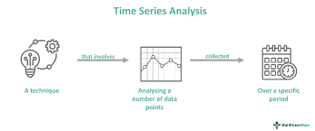
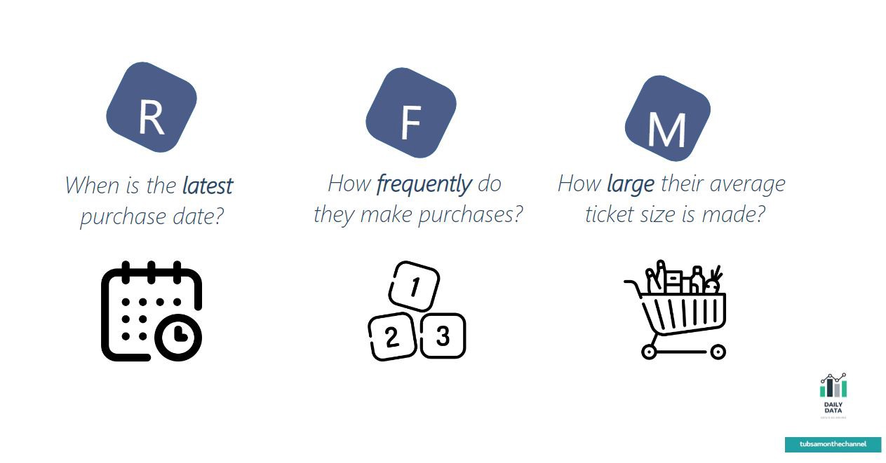

June 24, 2023
For this project, I conducted a churn analysis for a phone service provider. The goal was to study customer behavior and patterns in order to identify and predict when customers
might leave or stop using the service.

In this project, I worked with a messy survey data, preparing it for analysis by loading it into a SQL server. My goal was to explore different methods of obtaining clean data using SQL.

Time series analysis involves studying a sequence of data points collected over time. In this analysis,
I focused on using time series data to forecast monthly electricity production by applying a statistical model

The aim of this project is to understand how customers behave and group them based on their recency(R), how often they interact, frequency(F) and monetary value(M). This helps improve marketing campaigns, keep customers coming back, and increase revenue.
May 13, 2022
HR Data Analyst Project in excel

In this project, I examined the HR department's dataset for a specific company. The main goal was to understand the company's employees and their salary structure.